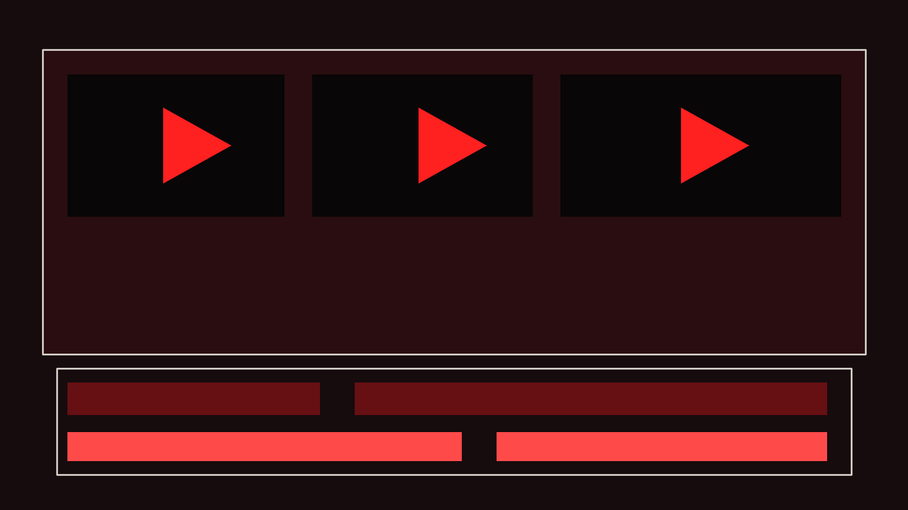
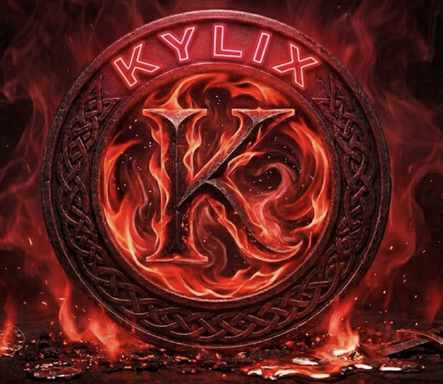
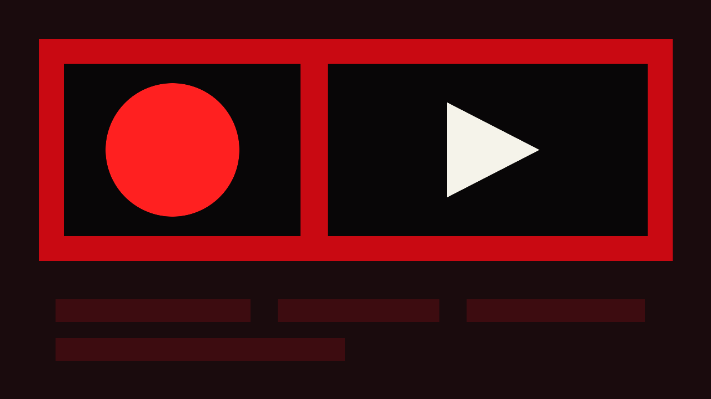
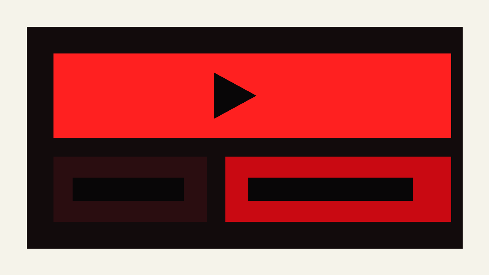

Short-form
Reels / Shorts edit
Rychlý začátek, střih do beatu, titulky, zoomy a přechody pro krátká videa.

Edit projekty
Reels, YouTube shorts, gaming highlighty a promo videa s důrazem na tempo, čistý střih a energii.
Ukázky

Short-form
Rychlý začátek, střih do beatu, titulky, zoomy a přechody pro krátká videa.

Gaming
Výrazné momenty, zvukové dopady, rychlé replaye a čistá gradace akce.

Promo
Krátké prezentační video pro značku, kanál, intro nebo sociální post.
Další část